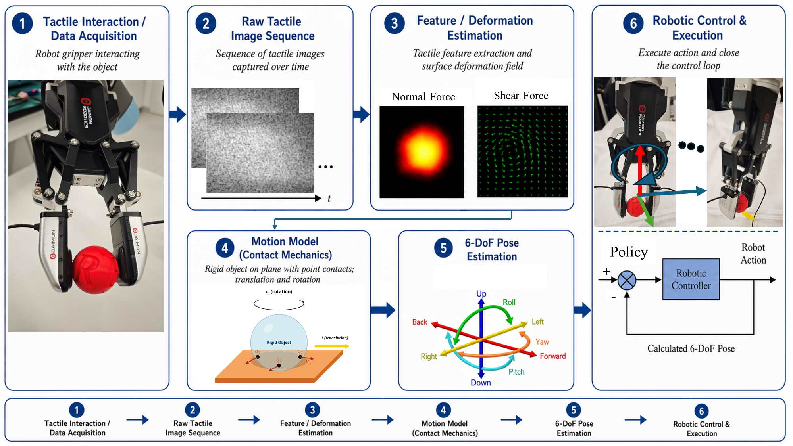
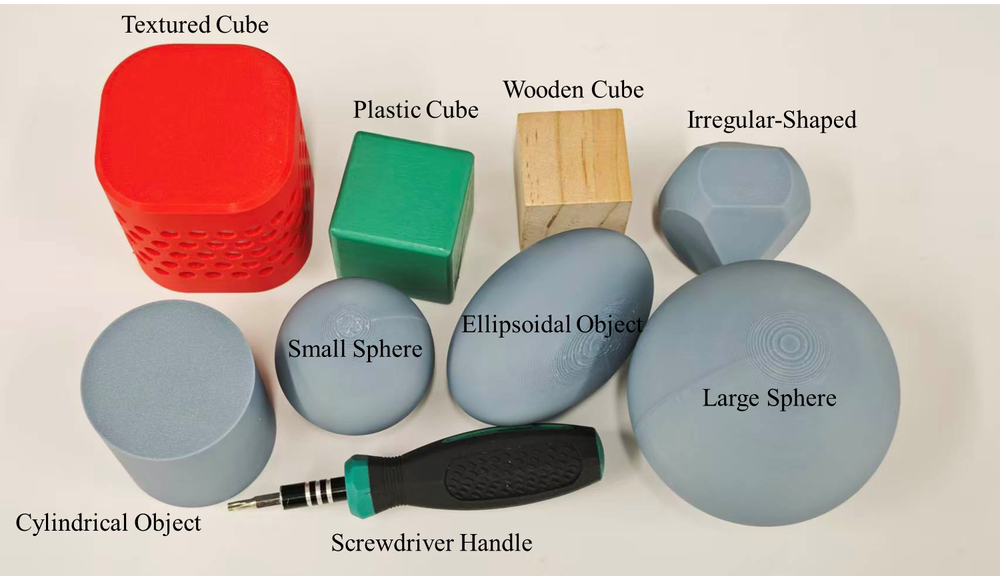
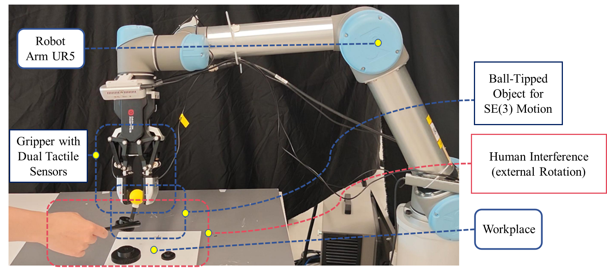

TACTILE SENSING / IN-GRIPPER MOTION
1Hong Kong Center for Construction Robotics, HKUST 2HKUST (Guangzhou) 3Great Bay University
*Corresponding authors
From local contact deformation to short-horizon motion feedback.
01 / PUBLICATION
IEEE Transactions on Automation Science and Engineering
The PDF is the IEEE accepted author version. It has not yet been fully edited for final publication.
02 / IMPLEMENTATION
Explore tactile images, depth, shear response and per-sensor 3D feedback. The public implementation is maintained in yuanzero/tacSE3_code.
git clone https://github.com/yuanzero/tacSE3_code.git
cd tacSE3_code
python -m pip install -e ".[viz]"
python -m tacse3.ball_demo \
--sensor-serial SERIAL1 SERIAL2 --pose3d onPython 3.10+ · Install the vendor dmrobotics SDK separately. Replace the serial placeholders with your devices.
The standalone demo displays local relative responses per sensor, rather than an absolute or accumulated object pose. See the unit conventions for interpretation.
Z Zero display R Raw / smooth S Snapshot Q Quit Focus the 2D dashboard for controls.
03 / RESEARCH OVERVIEW
When an object is held inside a gripper, occlusion and a lack of surface texture can make visual motion tracking unreliable. TacSE3 uses the deformation measured by two opposing visuotactile fingertips to recover short-horizon contact motion.
The method builds a calibrated 3D surface-deformation field. Contact-centroid motion supplies planar translation, while spatial variations in tangential deformation support a rigid-body rotation fit. The two sensor estimates are expressed in the end-effector frame and fused. Normal deformation contributes to contact geometry; independent object translation along the normal is constrained by the opposing fingers.
The paper evaluates motion estimation, translation–rotation coupling, changes in robot pose and contact location, different object geometries, and execution-time compensation with a frozen policy.

Figure 1: Overview of the proposed tactile-image-to-SE(3) estimation pipeline. Given a sequence of tactile observations, the method identifies the active contact region, maps the tactile response to a calibrated 3D deformation field, fits a rigid-body model in SE(3), and integrates the estimated twist for online compensation.
TacSE3 treats the tactile image as a geometric measurement of contact rather than a conventional textured image. The pipeline follows three principles: contact-first sensing, deformation-field decomposition, and rigid-body consistency. Planar translation is derived from the contact-mask centroid, while rotation is estimated from the shear-related field — avoiding ill-conditioned coupling in a single joint fit.
A rigid ball is grasped and commanded rotations are applied around axes rx, ry, rz. The visualization interface shows tracked 6D pose data together with tactile image data from the visuotactile sensors.
Rotation around rx
Rotation around ry
Rotation around rz
TacSE3 is evaluated on 8 objects varying in geometry and surface texture, including smooth textureless objects (sphere, ellipsoid, cylinder) and objects with surface structure (textured cube, screwdriver handle).

Figure 2: Objects used in the multi-object evaluation.
Ellipsoidal Object
Irregular-Shaped Object
Wooden Cube
Textured Cube
Plastic Cube
Screwdriver Handle
Large Sphere
Cylindrical Object
The estimated rotation is used as a post-processing signal on top of an ACT base policy. Three tasks are evaluated under human disturbance: Drawing, Gear Insertion, and Peg-in-Hole.

Figure 4: Experimental setup — UR5 robot arm with two DM-Tac visuotactile sensors.
Without TacSE3
With TacSE3
Without TacSE3
With TacSE3
Without TacSE3
With TacSE3
Even when an object is initially grasped securely, small translations, rolling motions, or local rotations relative to the gripper can accumulate into alignment errors and task failure. TacSE3 detects and compensates for in-gripper object drift in real time using only tactile sensing.
The challenge is especially severe for low-texture objects (polished spheres, smooth cylinders) where vision-based tracking fails and traditional tactile methods relying on image correspondences break down. TacSE3 addresses this by treating the tactile stream as a geometric measurement of surface deformation rather than a textured image, enabling constrained SE(3) motion estimation under textureless contact conditions.
CITATION
@article{tacse3_2026,
title = {TacSE3: Constrained SE(3) Motion Estimation from Low-Texture
Visuotactile Images for In-Gripper Tracking and Compensation},
author = {Liao, Zhongyuan and Wang, Junzhe and Liu, Qingyang and
Huang, Zhenmin and Ma, Jun and Cai, Yi and
Meng, Fei and Liang, Haobo and Wang, Michael Yu},
journal = {IEEE Transactions on Automation Science and Engineering},
year = {2026},
note = {Early Access},
doi = {10.1109/TASE.2026.3754711},
url = {https://doi.org/10.1109/TASE.2026.3754711}
}